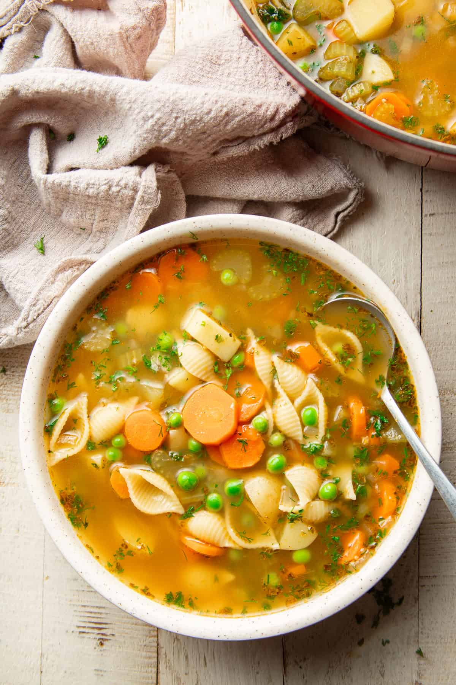

Soup

A soup is a liquid meal, typically made by boiling ingredients in water or stock.
Ingredients:
- 1 cup vegetables (carrots, celery, onions)
- 1 cup chicken or vegetable broth
- 1 tablespoon olive oil
- 1 teaspoon garlic powder
Instructions:
- In a large pot, heat the olive oil over medium heat.
- Add the vegetables and sauté for 5 minutes.
- Pour in the broth and add the garlic powder.
- Bring to a boil, then reduce heat and simmer for 20 minutes.